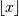

numpy.floor¶
- numpy.floor(x[, out]) = <ufunc 'floor'>¶
Return the floor of the input, element-wise.
The floor of the scalar x is the largest integer i, such that i <= x. It is often denoted as .
Parameters : x : array_like
Input data.
Returns : y : {ndarray, scalar}
The floor of each element in x.
Notes
Some spreadsheet programs calculate the “floor-towards-zero”, in other words floor(-2.5) == -2. NumPy, however, uses the a definition of floor such that floor(-2.5) == -3.
Examples
>>> a = np.array([-1.7, -1.5, -0.2, 0.2, 1.5, 1.7, 2.0]) >>> np.floor(a) array([-2., -2., -1., 0., 1., 1., 2.])